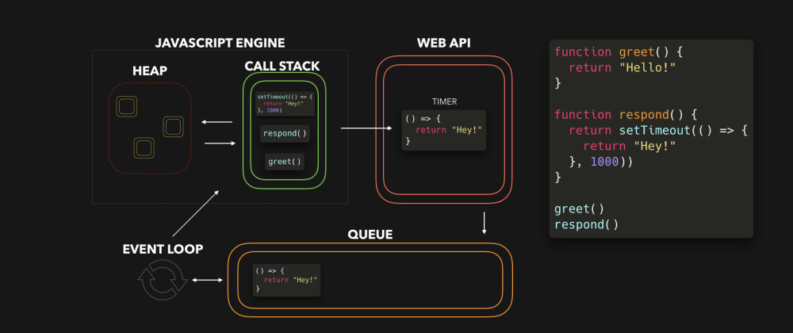
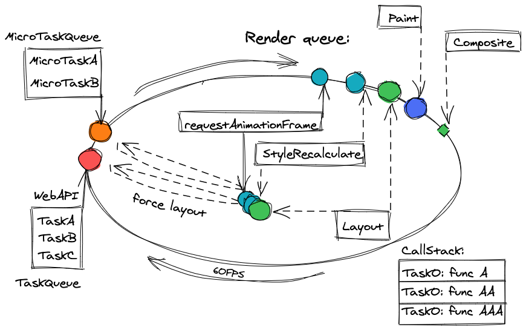

The Three Queues
of the Event Loop
Aleksei Fedorenko
Rolling Scopes School
Summer 2023
What is the Event Loop?
a simple picture
Micro- vs. Macro-tasks
Promises are "faster" than setTimeOut
E.g. this code:
setTimeout(() => console.log("timeout"));
Promise.resolve()
.then(() => console.log("promise"));
console.log("code");would output to console this:
code promise timeout
N.B.: promise printed earlier than timeout
Callbacks of Promises are Microtasks
Callbacks of Promises are Microtasks
They got an other queue!
There are some questions..
- Why do time consuming tasks block rendering?
- Why do time consuming tasks block rendering?
- When the rendering happens and how?
- Why do time consuming tasks block rendering?
- When the rendering happens and how?
- How the rendering relates to macro- and micro-tasks?
Visual illustration
Visual illustration
N.B.: only macrotasks and render excluding microtasks
Visual illustration
N.B.: only macrotasks and render excluding microtasks
What is rendering?
What is rendering?
Screen has to update 60 times a second (or every 16.6 milliseconds)
What is rendering?
Screen has to update 60 times per second
(or every 16.6 milliseconds)
What is rendering?
If screen updates less regularly -> worse picture üôÅ
What is rendering?
Missed frames are not displayed
There are three queues:
There are three queues:
- (Macro) tasks
There are three queues:
- (Macro) tasks
- Micro tasks
There are three queues:
- (Macro) tasks
- Micro tasks
- requestAnimationFrame queue (+rendering)
The queues work differently
The queues work differently
Macrotasks: by one at a time
The queues work differently
Microtasks: while the queue is not empty
The queues work differently
Microtasks: while the queue is not empty
⚠️ Infinite (or too long) loop is possible!
The queues work differently
RAFs: all those which were at start

Exceptions
Exceptions
❗️ Some properties and methods force layout

Exceptions
Safari execute RAFs after rendering...
Full picture
Full picture
Conclusion
Conclusion
- There are three different queues
Conclusion
- There are three different queues
- Don't chain too much immediately resolving Promises
Conclusion
- There are three different queues
- Don't chain too much immediately resolving Promises
- Pay attention to features forcing layout
Conclusion
- There are three different queues
- Don't chain too much immediately resolving Promises
- Pay attention to features forcing layout
- Use transform instead of position features
Conclusion
- There are three different queues
- Don't chain too much immediately resolving Promises
- Pay attention to features forcing layout
- Use transform instead of position features
- Happy looping!
References
Articles:
References
Videos:
- What the heck is the event loop anyway? by Philip Roberts
- Jake Archibald on web browser event loop, setTimeout, micro tasks, requestAnimationFrame, ... by Jake Archibald
- Разбираемся в очередях event loop'а JavaScript by Ayub Begimkulov